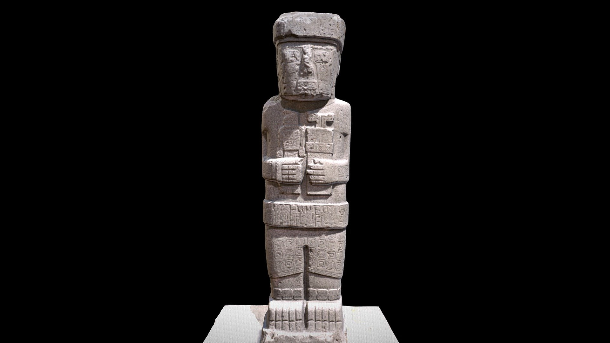

Museo de Castillo de Teayo, Ver.

Una piramide, como muy pocas, que aun conserva
una gran escalinata entera y un templo en la cima,
y representa el testimonio de una importante ciudad
huasteca que fue influenciada por los toltecas y mexicas.
El museo invita a conocer una original coleccion de esculturas
de Tlaloc y Xipe Totec, dioses de la lluvia y el maiz.